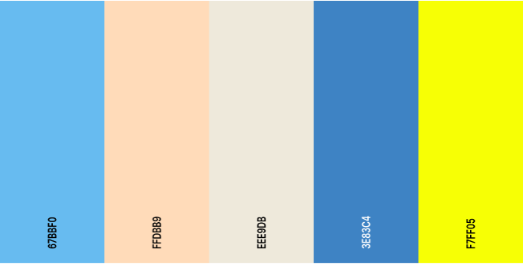

COLORES
COLOURS PAGE
- Colores principales
Los colores principales dentro de nuestra página web se corresponden a los de la siguiente imagen añadida.

La elección de esta paleta de colores viene referida a los diferentes recuerdos que me transmiten estos colores de la provincia de Cádiz
por una parte el azul claro recuerda al cielo azul que se puede apreciar esos buenos dias de verano, en otro lado aparece el gris que transmite
la referencia hacia las nubes que se levantan en su cielo durante las estaciones de otño e invierno. El color azul oscuro manifiesta un recuerdo
al agua del mar, así como el color arena por las playas que recorren toda la costa. Y finalmente el amarillo dedicado al equipo de la ciudad que tanta importancia tiene
en ella.
Estos colores claros atraen la atención de todo público sin atacar a la vista al ser colores calmados
que transmiten la seriedad y serenidad. Por otra parte el color amarillo que es el más llamativo recuerda
claramente su función de referenciar al objetivo buscado.

Ayuntamiento de Cadiz --> pmatpal0105@g.educaand.com